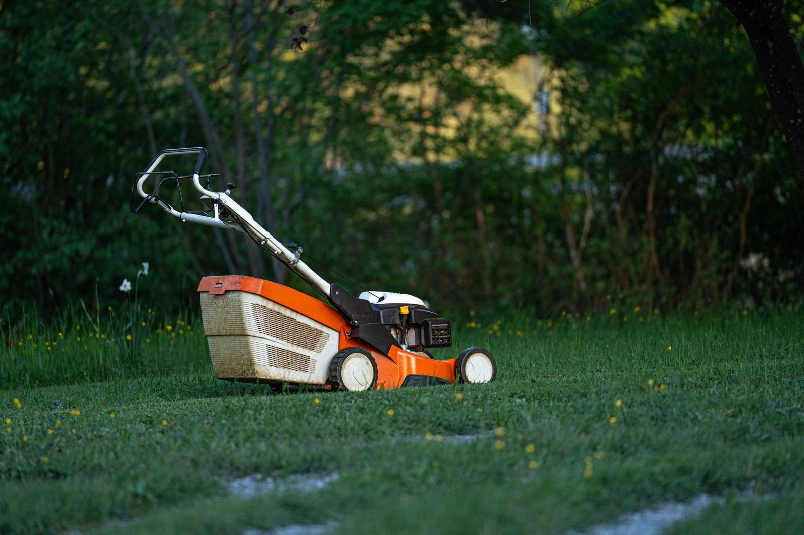
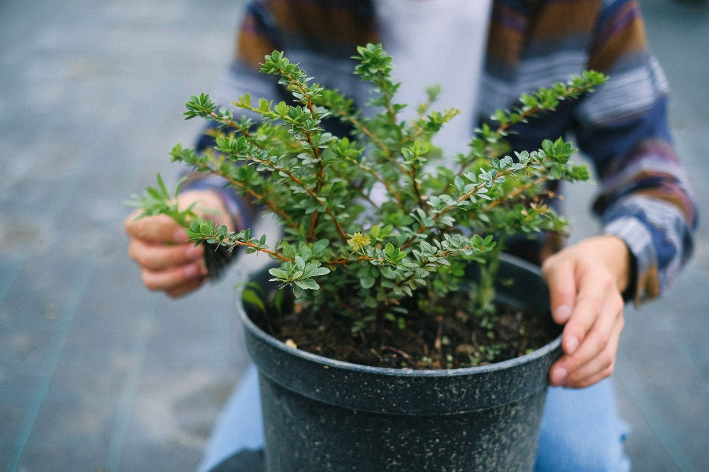

Pielęgnacja ogrodów w okolicach Płocka.

Łukasz Glonkowski. Zajmuję się pielęgnacją ogrodów przydomowych i terenów zieleni w okolicach Płocka, gmina Brudzeń Duży.
Cięcie żywopłotów, koszenie i renowacja trawnika, odchwaszczanie, sadzenie i sezonowe porządki. Pracuję regularnie albo jednorazowo - tak, jak wygodniej dla Twojego ogrodu.
Bez zobowiązań - opowiedz, co trzeba zrobić, a my podpowiemy jak i wycenimy.